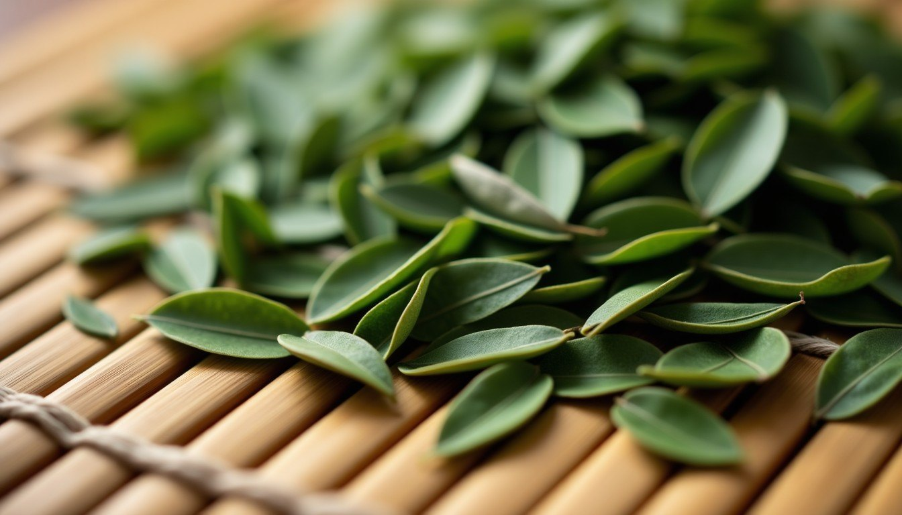

Our Story
Founded in 2015 by former botanist Maya Liu, Serenity Tea House began as a small stall at a Kyoto market. Today we partner with three generations of tea growers across Darjeeling, Uji, and Yunnan, ensuring each leaf is harvested at peak flavor.
Our commitment is simple: sustainable cultivation, transparent sourcing, and a ritual that turns everyday tea time into a pause for mindfulness.
